install.packages("tidyverse")4 Week 4: Data Frames and Plotting
Three weeks of machinery: vectors and matrices (Chapter 1), loops (Chapter 2), functions (Chapter 3). This week we point all of it at what statisticians actually spend their days on: tables of data. We will learn how to store data in data frames, manipulate them with dplyr (in Python: pandas), and — at last — plot them properly with ggplot2 (in Python: plotnine). The quick-and-dirty plot() and plt.plot() calls from the previous weeks retire this week.
4.1 The tidyverse
Modern data work in R happens largely inside the tidyverse, a collection of packages that share a common design: dplyr for manipulation, readr for import/export, tibble for nicer data frames, ggplot2 for graphics, and purrr, which you already met in Chapter 3.
Note for Python users: Python spreads the same jobs over separate packages: pandas covers what dplyr, readr and tibble do, and plotnine is a deliberate port of ggplot2 — same grammar, nearly the same code. Together with numpy they are this week’s toolkit, installed and imported alongside the R column below.
Install it once (already done on university machines):
R
Python
!python -m pip install pandas plotninethen load it at the top of every script:
R
library(tidyverse)Python
# several packages instead of one — import them together, at the top
import numpy as np
import pandas as pd
from plotnine import (
ggplot, aes, geom_point, geom_smooth, geom_histogram, geom_boxplot,
geom_line, geom_hline, facet_wrap, labs, theme_minimal
)Installing happens once per computer; loading happens once per session — a distinction everyone mixes up exactly once.
4.2 Data frames
A data frame is a table: each column is a named vector, and different columns may hold different types (numeric, character, logical). This is the crucial difference from the matrices of Chapter 1, where every entry had to share one type. In statistics-speak, columns are variables and rows are observations.
4.2.1 Building one
Here is a small dataset of plant-based milks and their nutritional content per 250 ml glass:
| type | calories | protein | fibre | carbs | sugars | fat |
|---|---|---|---|---|---|---|
| Almond | 60 | 1 | 1 | 8 | 7 | 2.5 |
| Soy | 100 | 7 | 2 | 10 | NA | 4 |
| Oat | 120 | 3 | NA | 20 | 19 | 2.5 |
| Rice | 130 | 1 | NA | 25 | NA | 2.5 |
Note the NAs: real data is rarely complete, and R has a dedicated value for “not available” (in Python, pandas marks missing numbers with the floating-point NaN, written np.nan). We build the data frame column by column with data.frame() — in Python, from a dictionary mapping column names to lists:
R
# each argument is one column (a vector); all must have the same length
milk <- data.frame(
type = c("Almond", "Soy", "Oat", "Rice"),
calories = c(60, 100, 120, 130),
protein = c(1, 7, 3, 1),
fibre = c(1, 2, NA, NA),
carbs = c(8, 10, 20, 25),
sugars = c(7, NA, 19, NA),
fat = c(2.5, 4, 2.5, 2.5)
)
milk type calories protein fibre carbs sugars fat
1 Almond 60 1 1 8 7 2.5
2 Soy 100 7 2 10 NA 4.0
3 Oat 120 3 NA 20 19 2.5
4 Rice 130 1 NA 25 NA 2.5Python
# each entry is one column (a list); all must have the same length
milk = pd.DataFrame({
"type": ["Almond", "Soy", "Oat", "Rice"],
"calories": [60, 100, 120, 130],
"protein": [1, 7, 3, 1],
"fibre": [1, 2, np.nan, np.nan],
"carbs": [8, 10, 20, 25],
"sugars": [7, np.nan, 19, np.nan],
"fat": [2.5, 4, 2.5, 2.5]
})
milk type calories protein fibre carbs sugars fat
0 Almond 60 1 1.0 8 7.0 2.5
1 Soy 100 7 2.0 10 NaN 4.0
2 Oat 120 3 NaN 20 19.0 2.5
3 Rice 130 1 NaN 25 NaN 2.54.2.2 Columns, rows and cells
Single columns come out with the dollar syntax in R and single square brackets in Python, returning a plain vector (in pandas: a Series):
R
milk$calories[1] 60 100 120 130Python
milk["calories"]0 60
1 100
2 120
3 130
Name: calories, dtype: int64In R, square brackets with a column name return instead a smaller data frame — pandas does the same when you double the brackets:
R
milk["calories"] # still a data frame calories
1 60
2 100
3 120
4 130milk[c("type", "protein")] # two columns, still a data frame type protein
1 Almond 1
2 Soy 7
3 Oat 3
4 Rice 1Python
milk[["calories"]] # double brackets: still a data frame calories
0 60
1 100
2 120
3 130milk[["type", "protein"]] # two columns, still a data frame type protein
0 Almond 1
1 Soy 7
2 Oat 3
3 Rice 1Note for Python users: the single/double bracket split is worth committing to memory: milk["calories"] is a Series (the vector-like object), milk[["calories"]] is a one-column DataFrame. The attribute shorthand milk.calories also works, but only for names that are valid Python identifiers — brackets are the safe habit.
For rows (and row/column combinations) we index in two dimensions, exactly as we did with matrices: df[rows, columns], with an empty slot meaning “everything”:
R
milk[2, ] # second row, all columns type calories protein fibre carbs sugars fat
2 Soy 100 7 2 10 NA 4milk[1:2, c("type", "calories")] # first two rows, two columns type calories
1 Almond 60
2 Soy 100Python
milk.iloc[[1]] # second row: position 1 — Python counts from 0! type calories protein fibre carbs sugars fat
1 Soy 100 7 2.0 10 NaN 4.0milk.loc[0:1, ["type", "calories"]] # first two rows, two columns type calories
0 Almond 60
1 Soy 100Note for Python users: pandas splits two-dimensional indexing over two indexers: .iloc takes integer positions (0-based, end excluded — the rules of Chapter 1), while .loc takes labels — here the row labels happen to be the integers 0, 1, 2, … — and includes both ends, which is why 0:1 above returns two rows. Also, milk.iloc[1] without the inner brackets squeezes the row into a Series; the doubled brackets keep it a one-row DataFrame.
The comparison operators of Chapter 2 work here too — a logical vector selects rows:
R
# rows where calories exceed 100
milk[milk$calories > 100, ] type calories protein fibre carbs sugars fat
3 Oat 120 3 NA 20 19 2.5
4 Rice 130 1 NA 25 NA 2.5Python
# rows where calories exceed 100
milk[milk["calories"] > 100] type calories protein fibre carbs sugars fat
2 Oat 120 3 NaN 20 19.0 2.5
3 Rice 130 1 NaN 25 NaN 2.5New columns are created by assigning to a name that does not exist yet:
R
# what fraction of the carbs is sugar?
milk$sugar_frac <- milk$sugars / milk$carbs
milk type calories protein fibre carbs sugars fat sugar_frac
1 Almond 60 1 1 8 7 2.5 0.875
2 Soy 100 7 2 10 NA 4.0 NA
3 Oat 120 3 NA 20 19 2.5 0.950
4 Rice 130 1 NA 25 NA 2.5 NAPython
# what fraction of the carbs is sugar?
milk["sugar_frac"] = milk["sugars"] / milk["carbs"]
milk type calories protein fibre carbs sugars fat sugar_frac
0 Almond 60 1 1.0 8 7.0 2.5 0.875
1 Soy 100 7 2.0 10 NaN 4.0 NaN
2 Oat 120 3 NaN 20 19.0 2.5 0.950
3 Rice 130 1 NaN 25 NaN 2.5 NaN4.2.3 Getting to know a data frame
For a data frame you did not build yourself, four functions tell you almost everything:
R
nrow(milk) # number of rows (ncol() and dim() also exist)[1] 4str(milk) # structure: column names, types, first values'data.frame': 4 obs. of 8 variables:
$ type : chr "Almond" "Soy" "Oat" "Rice"
$ calories : num 60 100 120 130
$ protein : num 1 7 3 1
$ fibre : num 1 2 NA NA
$ carbs : num 8 10 20 25
$ sugars : num 7 NA 19 NA
$ fat : num 2.5 4 2.5 2.5
$ sugar_frac: num 0.875 NA 0.95 NAsummary(milk) # summary statistics per column, NAs included type calories protein fibre carbs
Length:4 Min. : 60.0 Min. :1 Min. :1.00 Min. : 8.00
Class :character 1st Qu.: 90.0 1st Qu.:1 1st Qu.:1.25 1st Qu.: 9.50
Mode :character Median :110.0 Median :2 Median :1.50 Median :15.00
Mean :102.5 Mean :3 Mean :1.50 Mean :15.75
3rd Qu.:122.5 3rd Qu.:4 3rd Qu.:1.75 3rd Qu.:21.25
Max. :130.0 Max. :7 Max. :2.00 Max. :25.00
NA's :2
sugars fat sugar_frac
Min. : 7 Min. :2.500 Min. :0.8750
1st Qu.:10 1st Qu.:2.500 1st Qu.:0.8938
Median :13 Median :2.500 Median :0.9125
Mean :13 Mean :2.875 Mean :0.9125
3rd Qu.:16 3rd Qu.:2.875 3rd Qu.:0.9313
Max. :19 Max. :4.000 Max. :0.9500
NA's :2 NA's :2 head(milk, 2) # first few rows (useful for big data) type calories protein fibre carbs sugars fat sugar_frac
1 Almond 60 1 1 8 7 2.5 0.875
2 Soy 100 7 2 10 NA 4.0 NAPython
len(milk) # number of rows (milk.shape gives rows and columns)4milk.info() # structure: column names, types, non-missing counts<class 'pandas.core.frame.DataFrame'>
RangeIndex: 4 entries, 0 to 3
Data columns (total 8 columns):
# Column Non-Null Count Dtype
--- ------ -------------- -----
0 type 4 non-null object
1 calories 4 non-null int64
2 protein 4 non-null int64
3 fibre 2 non-null float64
4 carbs 4 non-null int64
5 sugars 2 non-null float64
6 fat 4 non-null float64
7 sugar_frac 2 non-null float64
dtypes: float64(4), int64(3), object(1)
memory usage: 388.0+ bytesmilk.describe() # summary statistics per numeric column calories protein fibre carbs sugars fat sugar_frac
count 4.000000 4.000000 2.000000 4.000000 2.000000 4.000 2.000000
mean 102.500000 3.000000 1.500000 15.750000 13.000000 2.875 0.912500
std 30.956959 2.828427 0.707107 8.098354 8.485281 0.750 0.053033
min 60.000000 1.000000 1.000000 8.000000 7.000000 2.500 0.875000
25% 90.000000 1.000000 1.250000 9.500000 10.000000 2.500 0.893750
50% 110.000000 2.000000 1.500000 15.000000 13.000000 2.500 0.912500
75% 122.500000 4.000000 1.750000 21.250000 16.000000 2.875 0.931250
max 130.000000 7.000000 2.000000 25.000000 19.000000 4.000 0.950000milk.head(2) # first few rows (useful for big data) type calories protein fibre carbs sugars fat sugar_frac
0 Almond 60 1 1.0 8 7.0 2.5 0.875
1 Soy 100 7 2.0 10 NaN 4.0 NaNsummary() counts the NAs for us — and those NAs are contagious. Any computation touching a missing value returns NA, unless you explicitly ask R to drop them:
R
mean(milk$sugars) # NA: R refuses to guess[1] NAmean(milk$sugars, na.rm = TRUE) # mean of the observed values[1] 13Python
milk["sugars"].mean() # pandas skips NaN by default!np.float64(13.0)milk["sugars"].mean(skipna=False) # the R-style refusal is opt-innp.float64(nan)Note for Python users: the two languages picked opposite defaults: R propagates NA until you say na.rm = TRUE; pandas silently skips NaN until you say skipna=False. Neither is wrong, but know which one you are getting — a summary that quietly ignores missing values can hide a data problem R would have shouted about.
Exercise 4.1: A data frame of distributions
Build a data frame dists describing five distributions, with columns:
name:"Bernoulli","Poisson","Exponential","Gaussian","Uniform";n_params: the number of parameters of each: 1, 1, 1, 2, 2;discrete:TRUE, TRUE, FALSE, FALSE, FALSE.
Then:
- Extract the
namecolumn as a vector. - Using logical indexing, extract the rows of the discrete distributions. (Hint:
discreteis already a logical vector — no comparison needed.) - Add a logical column
symmetricusing the dollar syntax (Python: bracket assignment) — only the Gaussian and the Uniform are symmetric. - Check your work with
str()anddim()(Python:.info()and.shape).
4.3 Tibbles
The tidyverse ships a modernised data frame called a tibble. It is a data frame — everything above applies — with two behavioural upgrades. First, printing: a tibble shows ten rows, only the columns that fit, and the type of each. A classic data frame would happily dump every last row of a 50,000-row dataset into your console. Second, no partial matching. Watch this data.frame quirk:
R
milk$cal # base data frame: silently matches "calories"![1] 60 100 120 130Python
milk["cal"] # pandas never guesses: unknown column, immediate errorKeyError: 'cal'That is a bug waiting to happen — mistype a column name and R may “helpfully” return a different column. A tibble warns you and returns NULL:
R
as_tibble(milk)$calWarning: Unknown or uninitialised column: `cal`.NULLPython
print(milk.get("cal")) # the forgiving lookup: None (Python's NULL)NoneNote for Python users: there is no tibble to reach for because there is no quirk to fix — pandas has exactly one table type, the DataFrame you have been using all along, and it never partial-matches (as the KeyError above shows; .get() is the polite version). The genuinely new thing to watch is the index: every DataFrame carries row labels — the unnamed left column in the printouts — which stick to their rows through filtering and sorting. It is pandas’ (heavily used) version of R’s (rarely used) row names; when it gets in your way, .reset_index() demotes it to an ordinary column, and index=False keeps it out of your CSV files. Both will appear below.
You create tibbles directly with tibble() (same syntax as data.frame(), with the bonus that later columns can use earlier ones), or convert with as_tibble(). From now on we work with tibbles, and we need a bigger dataset to play with: mtcars, a built-in table of 32 cars from a 1974 issue of Motor Trend (in Python it ships with plotnine, as plotnine.data.mtcars). The variables we will use most: mpg (miles per gallon — higher means more fuel-efficient), cyl (cylinders), hp (horsepower), wt (weight, 1000 lbs), qsec (quarter-mile time in seconds), am (transmission: 0 automatic, 1 manual).
R
head(mtcars, 3) mpg cyl disp hp drat wt qsec vs am gear carb
Mazda RX4 21.0 6 160 110 3.90 2.620 16.46 0 1 4 4
Mazda RX4 Wag 21.0 6 160 110 3.90 2.875 17.02 0 1 4 4
Datsun 710 22.8 4 108 93 3.85 2.320 18.61 1 1 4 1Python
from plotnine.data import mtcars
mtcars.head(3) name mpg cyl disp hp drat wt qsec vs am gear carb
0 Mazda RX4 21.0 6 160.0 110 3.90 2.620 16.46 0 1 4 4
1 Mazda RX4 Wag 21.0 6 160.0 110 3.90 2.875 17.02 0 1 4 4
2 Datsun 710 22.8 4 108.0 93 3.85 2.320 18.61 1 1 4 1One wrinkle: mtcars stores the car names as row names, a base-R feature tibbles deliberately drop. as_tibble() can rescue them into a proper column:
R
cars <- as_tibble(mtcars, rownames = "model")
cars# A tibble: 32 × 12
model mpg cyl disp hp drat wt qsec vs am gear carb
<chr> <dbl> <dbl> <dbl> <dbl> <dbl> <dbl> <dbl> <dbl> <dbl> <dbl> <dbl>
1 Mazda RX4 21 6 160 110 3.9 2.62 16.5 0 1 4 4
2 Mazda RX4 … 21 6 160 110 3.9 2.88 17.0 0 1 4 4
3 Datsun 710 22.8 4 108 93 3.85 2.32 18.6 1 1 4 1
4 Hornet 4 D… 21.4 6 258 110 3.08 3.22 19.4 1 0 3 1
5 Hornet Spo… 18.7 8 360 175 3.15 3.44 17.0 0 0 3 2
6 Valiant 18.1 6 225 105 2.76 3.46 20.2 1 0 3 1
7 Duster 360 14.3 8 360 245 3.21 3.57 15.8 0 0 3 4
8 Merc 240D 24.4 4 147. 62 3.69 3.19 20 1 0 4 2
9 Merc 230 22.8 4 141. 95 3.92 3.15 22.9 1 0 4 2
10 Merc 280 19.2 6 168. 123 3.92 3.44 18.3 1 0 4 4
# ℹ 22 more rowsPython
# plotnine's copy already keeps the names in a column; just rename it
cars = mtcars.rename(columns={"name": "model"})
cars model mpg cyl disp hp ... qsec vs am gear carb
0 Mazda RX4 21.0 6 160.0 110 ... 16.46 0 1 4 4
1 Mazda RX4 Wag 21.0 6 160.0 110 ... 17.02 0 1 4 4
2 Datsun 710 22.8 4 108.0 93 ... 18.61 1 1 4 1
3 Hornet 4 Drive 21.4 6 258.0 110 ... 19.44 1 0 3 1
4 Hornet Sportabout 18.7 8 360.0 175 ... 17.02 0 0 3 2
5 Valiant 18.1 6 225.0 105 ... 20.22 1 0 3 1
6 Duster 360 14.3 8 360.0 245 ... 15.84 0 0 3 4
7 Merc 240D 24.4 4 146.7 62 ... 20.00 1 0 4 2
8 Merc 230 22.8 4 140.8 95 ... 22.90 1 0 4 2
9 Merc 280 19.2 6 167.6 123 ... 18.30 1 0 4 4
10 Merc 280C 17.8 6 167.6 123 ... 18.90 1 0 4 4
11 Merc 450SE 16.4 8 275.8 180 ... 17.40 0 0 3 3
12 Merc 450SL 17.3 8 275.8 180 ... 17.60 0 0 3 3
13 Merc 450SLC 15.2 8 275.8 180 ... 18.00 0 0 3 3
14 Cadillac Fleetwood 10.4 8 472.0 205 ... 17.98 0 0 3 4
15 Lincoln Continental 10.4 8 460.0 215 ... 17.82 0 0 3 4
16 Chrysler Imperial 14.7 8 440.0 230 ... 17.42 0 0 3 4
17 Fiat 128 32.4 4 78.7 66 ... 19.47 1 1 4 1
18 Honda Civic 30.4 4 75.7 52 ... 18.52 1 1 4 2
19 Toyota Corolla 33.9 4 71.1 65 ... 19.90 1 1 4 1
20 Toyota Corona 21.5 4 120.1 97 ... 20.01 1 0 3 1
21 Dodge Challenger 15.5 8 318.0 150 ... 16.87 0 0 3 2
22 AMC Javelin 15.2 8 304.0 150 ... 17.30 0 0 3 2
23 Camaro Z28 13.3 8 350.0 245 ... 15.41 0 0 3 4
24 Pontiac Firebird 19.2 8 400.0 175 ... 17.05 0 0 3 2
25 Fiat X1-9 27.3 4 79.0 66 ... 18.90 1 1 4 1
26 Porsche 914-2 26.0 4 120.3 91 ... 16.70 0 1 5 2
27 Lotus Europa 30.4 4 95.1 113 ... 16.90 1 1 5 2
28 Ford Pantera L 15.8 8 351.0 264 ... 14.50 0 1 5 4
29 Ferrari Dino 19.7 6 145.0 175 ... 15.50 0 1 5 6
30 Maserati Bora 15.0 8 301.0 335 ... 14.60 0 1 5 8
31 Volvo 142E 21.4 4 121.0 109 ... 18.60 1 1 4 2
[32 rows x 12 columns]Note for Python users: pandas’ index (see the note above) is exactly the row-names idea, and mtcars.set_index("name") would recreate R’s original layout — but, as in R, the tidy habit is to keep data in ordinary columns.
4.4 Reading and writing data
Data usually lives in files, and the lingua franca of data files is the CSV (comma-separated values). The readr package (in the tidyverse) provides write_csv() and read_csv():
R
# write the milk data next to this script...
write_csv(milk, "week4_milk.csv")
# ...and read it back
milk2 <- read_csv("week4_milk.csv")Rows: 4 Columns: 8
── Column specification ────────────────────────────────────────────────────────
Delimiter: ","
chr (1): type
dbl (7): calories, protein, fibre, carbs, sugars, fat, sugar_frac
ℹ Use `spec()` to retrieve the full column specification for this data.
ℹ Specify the column types or set `show_col_types = FALSE` to quiet this message.milk2# A tibble: 4 × 8
type calories protein fibre carbs sugars fat sugar_frac
<chr> <dbl> <dbl> <dbl> <dbl> <dbl> <dbl> <dbl>
1 Almond 60 1 1 8 7 2.5 0.875
2 Soy 100 7 2 10 NA 4 NA
3 Oat 120 3 NA 20 19 2.5 0.95
4 Rice 130 1 NA 25 NA 2.5 NA Python
# write the milk data next to this script...
milk.to_csv("week4_milk_py.csv", index=False)
# ...and read it back
milk2 = pd.read_csv("week4_milk_py.csv")
milk2 type calories protein fibre carbs sugars fat sugar_frac
0 Almond 60 1 1.0 8 7.0 2.5 0.875
1 Soy 100 7 2.0 10 NaN 4.0 NaN
2 Oat 120 3 NaN 20 19.0 2.5 0.950
3 Rice 130 1 NaN 25 NaN 2.5 NaNread_csv() reads the file, guesses each column’s type (it prints its guesses — read them, they catch import bugs early), and returns a tibble. Base R has read.csv() — dot, not underscore — which does the same job into a plain data frame, more slowly on large files. Recall from Chapter 1 that a bare filename like "week4_milk.csv" is relative to your working directory — if the file cannot be found, getwd() (Python: os.getcwd()) is the first thing to check.
Note for Python users: two things in the chunk above. First, the filename: throughout these notes the Python column writes _py files (week4_milk_py.csv) so the two languages never overwrite each other’s output. Second, index=False: without it pandas saves the index as an anonymous extra column, which comes back to haunt you at reading time. pd.read_csv() guesses column types just like readr — but silently; run .info() on an import when it matters.
Exercise 4.2: A CSV round trip
Using the dists data frame from Exercise 4.1:
- Write it to
"week4_dists.csv"withwrite_csv()(Python: to"week4_dists_py.csv"with.to_csv(..., index=False)). - Find the file and open it with a text editor (or click it in the RStudio Files pane and choose View File). What does the raw format look like?
- Read it back with
read_csv()(Python:pd.read_csv()) and comparestr()(Python:.info()) of the original and the copy. Did the logical column survive the trip? - Read it once more with base
read.csv(). What differs? (R only — Python has just the one CSV reader.)
4.5 The pipe |>
Data analysis is a sequence of steps, and code reads best when it is written in the order the steps happen. The pipe operator |> takes the value on its left and passes it as the first argument of the function on its right — programming’s version of function composition (f_2 \circ f_1)(x), which we met in Chapter 3. So to compute \ln(1 + 2 + \dots + 10):
R
x <- 1:10
x |> sum() |> log() # same as log(sum(x))[1] 4.007333Python
x = np.arange(1, 11)
np.log(x.sum()) # no pipe in Python: nest the calls, or chain methodsnp.float64(4.007333185232471)Read it left to right: “take x, sum it, take the log”. Further arguments go in their usual place, after the piped-in first one:
R
x |> sum() |> log(base = 10) # same as log(sum(x), base = 10)[1] 1.740363Python
np.log10(x.sum()) # numpy's dedicated base-10 logarithmnp.float64(1.7403626894942439)In the wild you will also meet %>%, the older pipe from the magrittr package — for our purposes it does the same thing, but write the native |>.
The pipe matters this week because every dplyr verb takes a data frame as its first argument and returns a data frame: they are built to be piped.
Note for Python users: Python has no pipe operator; the idiom that plays its role is method chaining. Every pandas verb below is a method that returns a new DataFrame, so a pipeline reads left to right as cars.query(...).assign(...).sort_values(...) — dots instead of pipes. Wrap a chain in parentheses to split it over several lines, one verb per line; you will see that layout constantly from here on.
4.6 Data manipulation with dplyr (and pandas)
dplyr provides one verb per manipulation you would want to do to a table:
| Verb | Action | pandas counterpart |
|---|---|---|
filter() |
keep a subset of the rows | .query() / boolean mask |
select() |
keep a subset of the columns | [[...]] double brackets |
mutate() |
add new columns computed from existing ones | .assign() |
arrange() |
reorder the rows | .sort_values() |
summarise() |
collapse rows down to summary statistics | .agg() |
Inside a verb you refer to columns by bare name — no cars$ prefix needed; dplyr knows to look inside the data frame first. (One side effect of loading the tidyverse: its filter() masks the base function of the same name. If filter() ever behaves strangely, be explicit and call dplyr::filter().)
Note for Python users: pandas gives you the bare-name comfort only inside .query(), whose condition is a string evaluated inside the data frame. Elsewhere columns are spelled cars["mpg"] — and inside a chain, where the intermediate data frame has no name, .assign() accepts functions of it (lambda df: ...). Both appear below.
4.6.1 filter and select
R
# rows: frugal cars only
cars |> filter(mpg > 25)# A tibble: 6 × 12
model mpg cyl disp hp drat wt qsec vs am gear carb
<chr> <dbl> <dbl> <dbl> <dbl> <dbl> <dbl> <dbl> <dbl> <dbl> <dbl> <dbl>
1 Fiat 128 32.4 4 78.7 66 4.08 2.2 19.5 1 1 4 1
2 Honda Civic 30.4 4 75.7 52 4.93 1.62 18.5 1 1 4 2
3 Toyota Coro… 33.9 4 71.1 65 4.22 1.84 19.9 1 1 4 1
4 Fiat X1-9 27.3 4 79 66 4.08 1.94 18.9 1 1 4 1
5 Porsche 914… 26 4 120. 91 4.43 2.14 16.7 0 1 5 2
6 Lotus Europa 30.4 4 95.1 113 3.77 1.51 16.9 1 1 5 2# conditions combine with the logical operators of week 2
cars |> filter(cyl == 4 & hp > 90)# A tibble: 6 × 12
model mpg cyl disp hp drat wt qsec vs am gear carb
<chr> <dbl> <dbl> <dbl> <dbl> <dbl> <dbl> <dbl> <dbl> <dbl> <dbl> <dbl>
1 Datsun 710 22.8 4 108 93 3.85 2.32 18.6 1 1 4 1
2 Merc 230 22.8 4 141. 95 3.92 3.15 22.9 1 0 4 2
3 Toyota Coro… 21.5 4 120. 97 3.7 2.46 20.0 1 0 3 1
4 Porsche 914… 26 4 120. 91 4.43 2.14 16.7 0 1 5 2
5 Lotus Europa 30.4 4 95.1 113 3.77 1.51 16.9 1 1 5 2
6 Volvo 142E 21.4 4 121 109 4.11 2.78 18.6 1 1 4 2Python
# rows: frugal cars only
cars.query("mpg > 25") model mpg cyl disp hp ... qsec vs am gear carb
17 Fiat 128 32.4 4 78.7 66 ... 19.47 1 1 4 1
18 Honda Civic 30.4 4 75.7 52 ... 18.52 1 1 4 2
19 Toyota Corolla 33.9 4 71.1 65 ... 19.90 1 1 4 1
25 Fiat X1-9 27.3 4 79.0 66 ... 18.90 1 1 4 1
26 Porsche 914-2 26.0 4 120.3 91 ... 16.70 0 1 5 2
27 Lotus Europa 30.4 4 95.1 113 ... 16.90 1 1 5 2
[6 rows x 12 columns]# conditions combine with the logical operators of week 2
cars.query("cyl == 4 & hp > 90") model mpg cyl disp hp ... qsec vs am gear carb
2 Datsun 710 22.8 4 108.0 93 ... 18.61 1 1 4 1
8 Merc 230 22.8 4 140.8 95 ... 22.90 1 0 4 2
20 Toyota Corona 21.5 4 120.1 97 ... 20.01 1 0 3 1
26 Porsche 914-2 26.0 4 120.3 91 ... 16.70 0 1 5 2
27 Lotus Europa 30.4 4 95.1 113 ... 16.90 1 1 5 2
31 Volvo 142E 21.4 4 121.0 109 ... 18.60 1 1 4 2
[6 rows x 12 columns]R
# columns: just the ones we care about
cars |> select(model, mpg, hp) |> head(3)# A tibble: 3 × 3
model mpg hp
<chr> <dbl> <dbl>
1 Mazda RX4 21 110
2 Mazda RX4 Wag 21 110
3 Datsun 710 22.8 93# or everything except some
cars |> select(-vs, -am) |> head(3)# A tibble: 3 × 10
model mpg cyl disp hp drat wt qsec gear carb
<chr> <dbl> <dbl> <dbl> <dbl> <dbl> <dbl> <dbl> <dbl> <dbl>
1 Mazda RX4 21 6 160 110 3.9 2.62 16.5 4 4
2 Mazda RX4 Wag 21 6 160 110 3.9 2.88 17.0 4 4
3 Datsun 710 22.8 4 108 93 3.85 2.32 18.6 4 1Python
# columns: just the ones we care about
cars[["model", "mpg", "hp"]].head(3) model mpg hp
0 Mazda RX4 21.0 110
1 Mazda RX4 Wag 21.0 110
2 Datsun 710 22.8 93# or everything except some
cars.drop(columns=["vs", "am"]).head(3) model mpg cyl disp hp drat wt qsec gear carb
0 Mazda RX4 21.0 6 160.0 110 3.90 2.620 16.46 4 4
1 Mazda RX4 Wag 21.0 6 160.0 110 3.90 2.875 17.02 4 4
2 Datsun 710 22.8 4 108.0 93 3.85 2.320 18.61 4 14.6.2 mutate and arrange
mutate() adds columns. Let’s add fuel efficiency in sensible units, and — while we are at it — turn the 0/1 codes into labelled categorical variables. R’s type for categorical data is the factor: a vector with a fixed set of levels and readable labels, which summary() and ggplot2 treat as labelled groups — discrete colour scales, one box or line per level — rather than as numbers on a continuous axis.
R
cars <- cars |>
mutate(
kpl = mpg * 0.425, # kilometres per litre
am = factor(am, labels = c("automatic", "manual")),
vs = factor(vs, labels = c("V-shaped", "straight"))
)Python
cars = cars.assign(
kpl = cars["mpg"] * 0.425, # kilometres per litre
am = pd.Categorical(cars["am"].map({0: "automatic", 1: "manual"})),
vs = pd.Categorical(cars["vs"].map({0: "V-shaped", 1: "straight"}))
)Note for Python users: the factor’s pandas counterpart is the categorical dtype: .map() swaps the 0/1 codes for readable labels, and pd.Categorical() marks the result as categorical, which plotnine then treats exactly as ggplot2 treats factors — discrete colour scales, one box or line per level.
arrange() sorts rows, ascending by default, descending inside desc() (pandas: ascending=False). And because every verb pipes into the next, a whole analysis becomes one readable chain:
R
# the most frugal 4-cylinder cars
cars |>
filter(cyl == 4) |>
arrange(desc(kpl)) |>
select(model, kpl, hp) |>
head(3)# A tibble: 3 × 3
model kpl hp
<chr> <dbl> <dbl>
1 Toyota Corolla 14.4 65
2 Fiat 128 13.8 66
3 Honda Civic 12.9 52Python
# the most frugal 4-cylinder cars
(
cars
.query("cyl == 4")
.sort_values("kpl", ascending=False)
[["model", "kpl", "hp"]]
.head(3)
) model kpl hp
19 Toyota Corolla 14.4075 65
17 Fiat 128 13.7700 66
18 Honda Civic 12.9200 52
Exercise 4.3: dplyr drills
Working on cars (the mtcars table with the labelled categorical columns from above):
- Find all manual cars that do more than 25 miles per gallon.
- Add a column
efficiency = mpg / hp, miles per gallon per horsepower. - Show the
model,mpg,hpandefficiencyof the five most efficient cars. - Now do (b) and (c) as a single pipeline, starting from
carsand using each verb at most once.
4.6.3 group_by and summarise
summarise() collapses a data frame to summary statistics — n() counts the rows, and any vector-to-number function (mean, sd, median, min, …) works:
R
cars |> summarise(n = n(), mean_mpg = mean(mpg), sd_mpg = sd(mpg))# A tibble: 1 × 3
n mean_mpg sd_mpg
<int> <dbl> <dbl>
1 32 20.1 6.03Python
# ungrouped: pick the column, name the summaries
cars["mpg"].agg(n = "size", mean_mpg = "mean", sd_mpg = "std")n 32.000000
mean_mpg 20.090625
sd_mpg 6.026948
Name: mpg, dtype: float64On its own this is a glorified mean(). The power move is group_by(): it splits the data frame into groups by the values of one or more columns, so that summarise() produces one row per group. Group means and group spreads are the first step of nearly every statistical analysis, and here they cost one pipeline:
R
cars |>
group_by(am) |>
summarise(n = n(), mean_mpg = mean(mpg), sd_mpg = sd(mpg))# A tibble: 2 × 4
am n mean_mpg sd_mpg
<fct> <int> <dbl> <dbl>
1 automatic 19 17.1 3.83
2 manual 13 24.4 6.17Python
(
cars
.groupby("am", observed=True)
.agg(n = ("mpg", "size"),
mean_mpg = ("mpg", "mean"),
sd_mpg = ("mpg", "std"))
.reset_index()
) am n mean_mpg sd_mpg
0 automatic 19 17.147368 3.833966
1 manual 13 24.392308 6.166504Manual cars in this dataset do, on average, about 7 more miles per gallon — though with 1974 technology, the causal story is mostly “small cheap cars had manual gearboxes”. Grouping by two variables gives one row per combination:
R
cars |>
group_by(am, cyl) |>
summarise(n = n(), mean_mpg = mean(mpg))# A tibble: 6 × 4
# Groups: am [2]
am cyl n mean_mpg
<fct> <dbl> <int> <dbl>
1 automatic 4 3 22.9
2 automatic 6 4 19.1
3 automatic 8 12 15.0
4 manual 4 8 28.1
5 manual 6 3 20.6
6 manual 8 2 15.4Python
(
cars
.groupby(["am", "cyl"], observed=True)
.agg(n = ("mpg", "size"), mean_mpg = ("mpg", "mean"))
.reset_index()
) am cyl n mean_mpg
0 automatic 4 3 22.900000
1 automatic 6 4 19.125000
2 automatic 8 12 15.050000
3 manual 4 8 28.075000
4 manual 6 3 20.566667
5 manual 8 2 15.400000Note for Python users: each .agg() pair reads new_column = (column, function) — the counterpart of summarise()’s new_column = f(column). groupby() moves the grouping values into the index, so we finish with .reset_index() to get ordinary columns back; and observed=True keeps only group combinations that actually occur, which is what summarise() does (it also silences a pandas warning about its changing default).
Exercise 4.4: Group statistics on mtcars
- Group
carsby number of cylinders and compute, per group: the number of cars, the mean and standard deviation ofmpg, and the mean ofhp. - Group by transmission and cylinders, computing group sizes and mean
mpg. - Compare (b) with the transmission-only summary in the notes: within each cylinder class, is the manual advantage still around 7 mpg? What does that tell you about comparing group means without controlling for other variables?
4.6.4 Joining data frames
Real analyses often need to combine two tables that share a common column (a key). Suppose we find supermarket prices for some of our milks:
R
prices <- tibble(
type = c("Almond", "Oat", "Soy"),
price = c(1.80, 1.50, 1.40) # £ per litre
)
# match rows of `milk` with rows of `prices` by the shared column `type`
left_join(milk, prices, by = "type") type calories protein fibre carbs sugars fat sugar_frac price
1 Almond 60 1 1 8 7 2.5 0.875 1.8
2 Soy 100 7 2 10 NA 4.0 NA 1.4
3 Oat 120 3 NA 20 19 2.5 0.950 1.5
4 Rice 130 1 NA 25 NA 2.5 NA NAPython
prices = pd.DataFrame({
"type": ["Almond", "Oat", "Soy"],
"price": [1.80, 1.50, 1.40] # £ per litre
})
# match rows of `milk` with rows of `prices` by the shared column `type`
milk.merge(prices, on="type", how="left") type calories protein fibre carbs sugars fat sugar_frac price
0 Almond 60 1 1.0 8 7.0 2.5 0.875 1.8
1 Soy 100 7 2.0 10 NaN 4.0 NaN 1.4
2 Oat 120 3 NaN 20 19.0 2.5 0.950 1.5
3 Rice 130 1 NaN 25 NaN 2.5 NaN NaNleft_join() keeps every row of its first argument and attaches the matching information from the second; rows with no match (poor Rice) get NA. There is a whole family — full_join(), inner_join(), right_join() — differing only in which unmatched rows survive. (pandas folds the whole family into .merge()’s how argument: "left", "outer", "inner", "right".)
4.7 Plotting with ggplot2 (and plotnine)
ggplot2 implements the grammar of graphics: instead of memorising one function per chart type, you describe a plot with three ingredients:
- the data: a data frame;
- the aesthetic mapping
aes(): which variables map to which visual channels — x-position, y-position, colour, fill, shape; - the geometries
geom_*(): how the mapped data is drawn — points, lines, bars, boxes.
Layers are glued together with + (a historical quirk: ggplot2 predates the pipe). Swap the geometry and the same data-to-aesthetics mapping becomes a different plot; that is the whole grammar. Easier done than said:
Note for Python users: plotnine is a faithful port of ggplot2: same grammar, same function names, same +. Two mechanical differences only: column names inside aes() are quoted strings — aes(x="wt", y="mpg") — and a plot spread over several lines needs wrapping parentheses (plus .show() to display it from a script). Both spellings of colour/color work, in either language.
4.7.1 Scatter plots
R
ggplot(cars, aes(x = wt, y = mpg)) +
geom_point()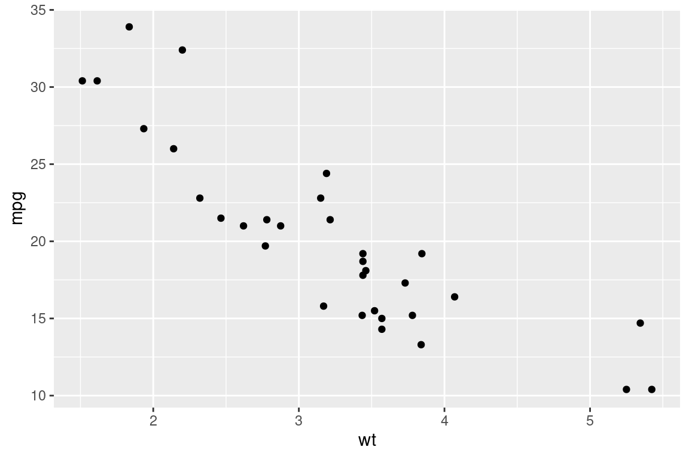
Python
(
ggplot(cars, aes(x="wt", y="mpg")) +
geom_point()
).show()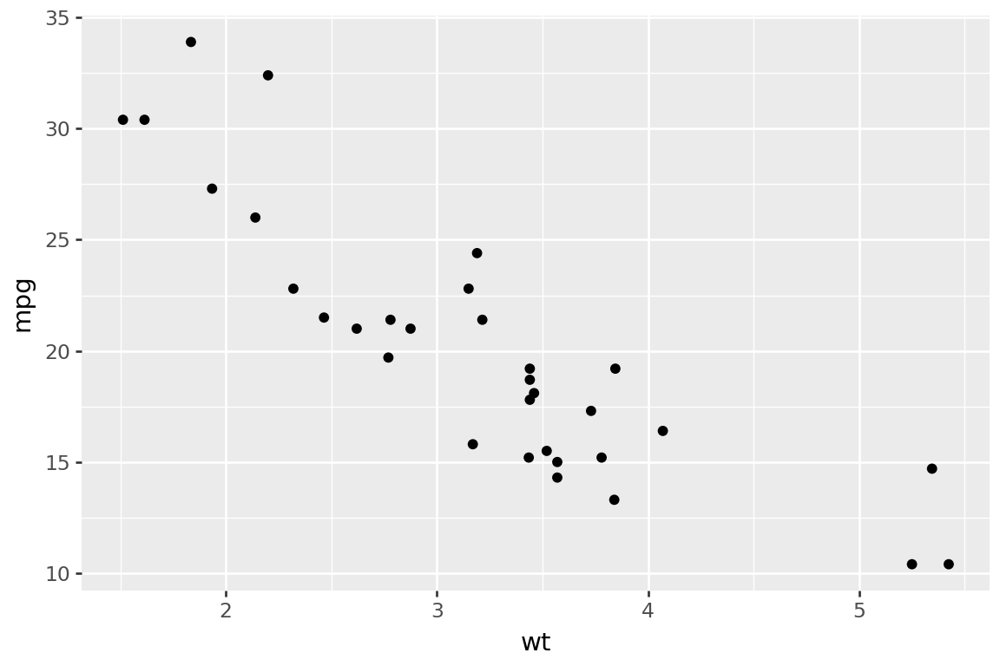
Dissecting it: ggplot(cars, ...) starts a plot from the cars data; aes(x = wt, y = mpg) maps weight to the x-axis and fuel consumption to the y-axis; + geom_point() draws one point per row. Heavier cars burn more fuel — a relationship crying out for a line through it:
R
ggplot(cars, aes(x = wt, y = mpg)) +
geom_point() +
geom_smooth(method = "lm", se = FALSE)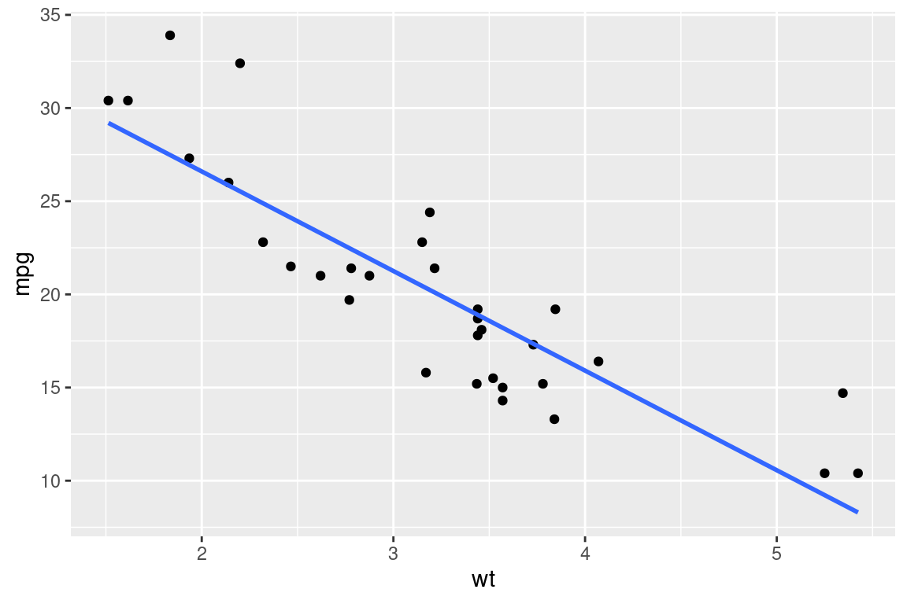
Python
(
ggplot(cars, aes(x="wt", y="mpg")) +
geom_point() +
geom_smooth(method="lm", se=False)
).show()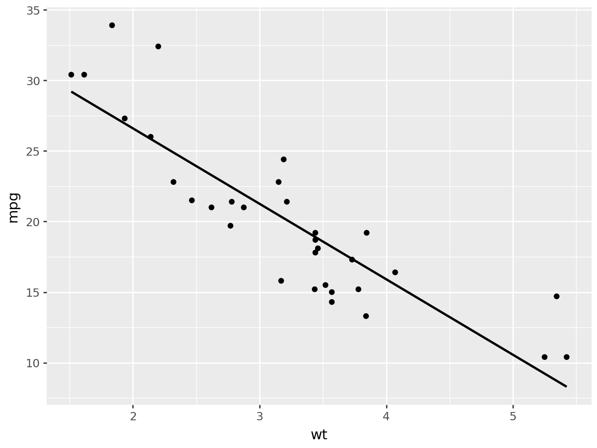
geom_smooth(method = "lm") overlays the least-squares regression line — the line minimising the sum of squared vertical distances to the points, the same fit you would get from R’s lm(mpg ~ wt, data = cars) (in Python, from statsmodels, which is exactly what plotnine’s method="lm" calls under the hood). Fitting models by minimising a loss is precisely the business of Chapter 5.
To bring in a third variable, map it to a third aesthetic:
R
ggplot(cars, aes(x = wt, y = mpg, colour = am)) +
geom_point()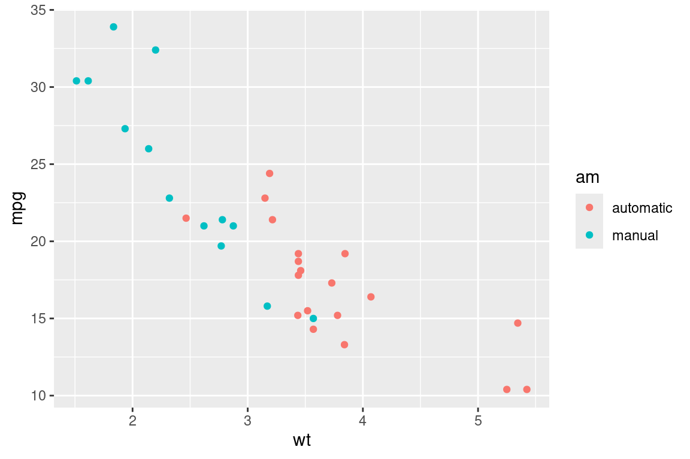
Python
(
ggplot(cars, aes(x="wt", y="mpg", colour="am")) +
geom_point()
).show()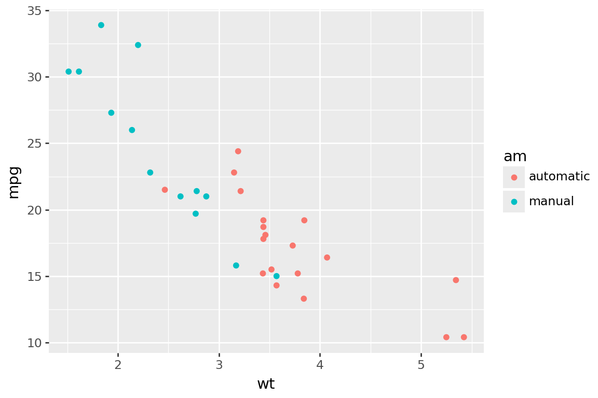
One extra word in aes() bought us a coloured grouping and a legend.
4.7.2 Mapping vs setting aesthetics
There are two ways to control colour, and mixing them up is the most common ggplot bug in existence. Mapping (inside aes()) ties an aesthetic to a variable; setting (outside aes(), inside the geom) fixes it to a constant:
R
# setting: every point steelblue, no legend — a constant, so OUTSIDE aes()
ggplot(cars, aes(x = wt, y = mpg)) +
geom_point(colour = "steelblue")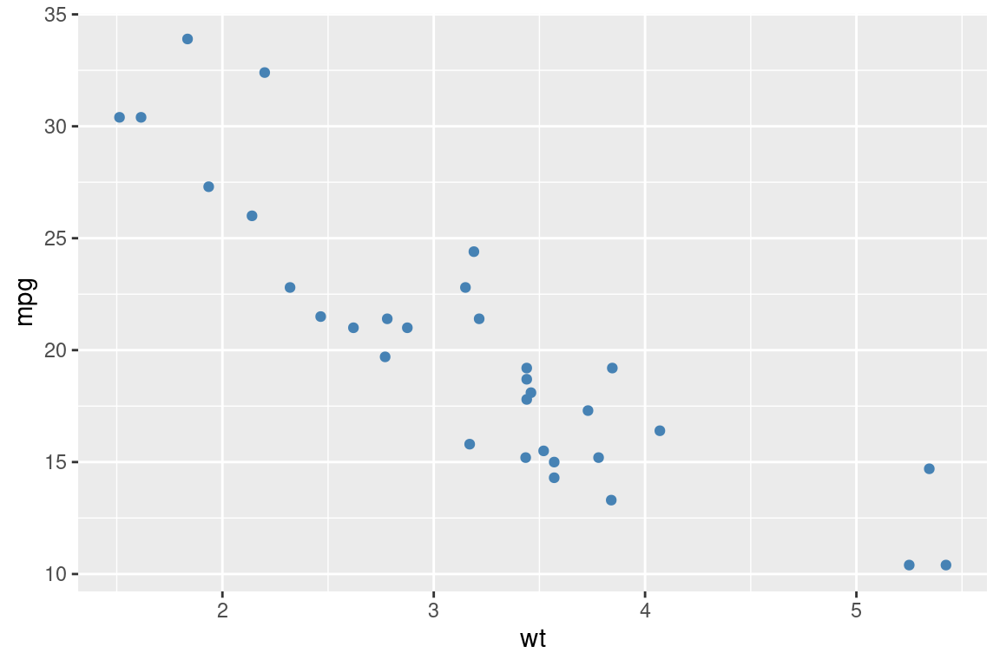
Python
# setting: every point steelblue, no legend — a constant, so OUTSIDE aes()
(
ggplot(cars, aes(x="wt", y="mpg")) +
geom_point(colour="steelblue")
).show()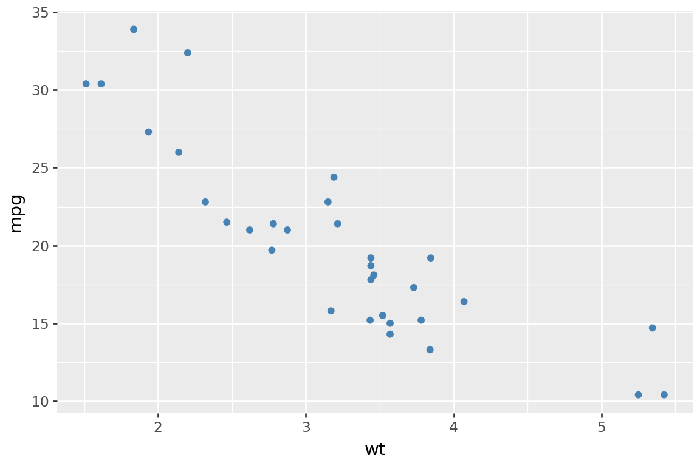
Put a constant inside aes() and ggplot does something legal but absurd: it invents a variable whose every value is the string "blue", and dutifully assigns it the first default colour — which is red:
R
# the classic mistake: "blue" is not a variable
ggplot(cars, aes(x = wt, y = mpg, colour = "blue")) +
geom_point()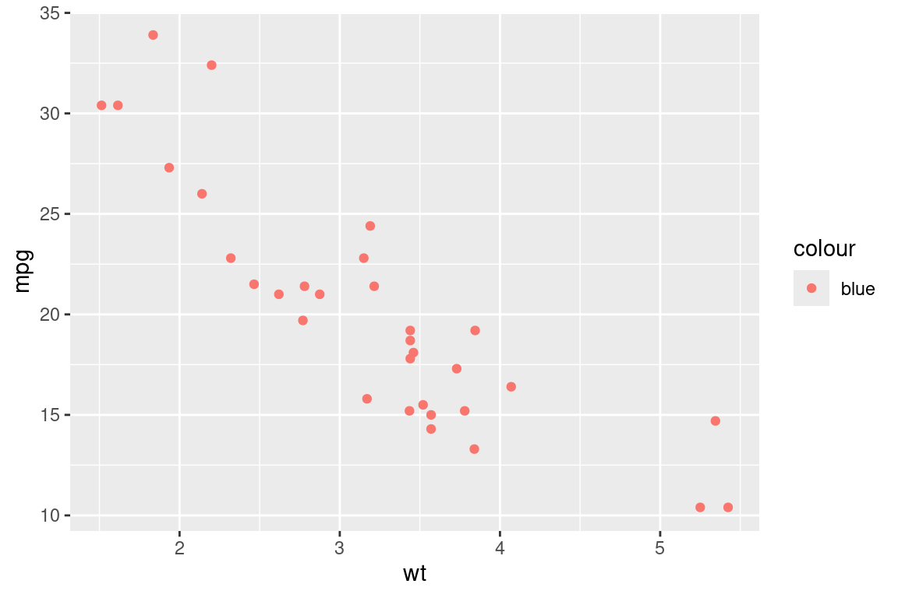
Python
# the classic mistake: "blue" is not a variable
(
ggplot(cars, aes(x="wt", y="mpg", colour='"blue"')) +
geom_point()
).show()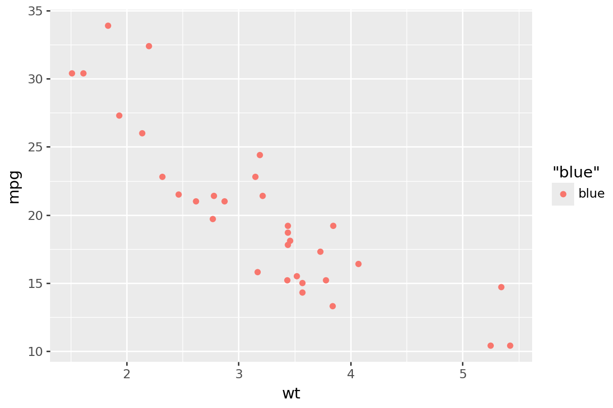
If your plot sports a legend titled "blue" full of red points, you now know why.
Note for Python users: mind the doubled quotes in aes(colour='"blue"'). plotnine evaluates aes() strings as expressions, so the inner quotes are what make "blue" a constant string — a plain aes(colour="blue") would go looking for a column called blue and raise an error instead of drawing red points. Different failure, same moral: constants do not belong in aes().
Exercise 4.5: Reproduce this scatter plot
Build, from cars, the following plot (described in words — your job is to translate it into one ggplot call):
- a scatter plot with gross horsepower
hpon the x-axis and quarter-mile timeqsecon the y-axis; - points coloured by transmission (
am); - one least-squares line per transmission group, without the confidence band.
You should find that mapping colour automatically makes geom_smooth() fit one line per group. Does more horsepower mean a faster quarter mile? Does the relationship differ between transmissions?
4.7.3 Histograms and boxplots
The distribution of a single variable needs only an x mapping; geom_histogram() bins it and draws bar heights:
R
ggplot(cars, aes(x = mpg)) +
geom_histogram(binwidth = 2)Python
(
ggplot(cars, aes(x="mpg")) +
geom_histogram(binwidth=2)
).show()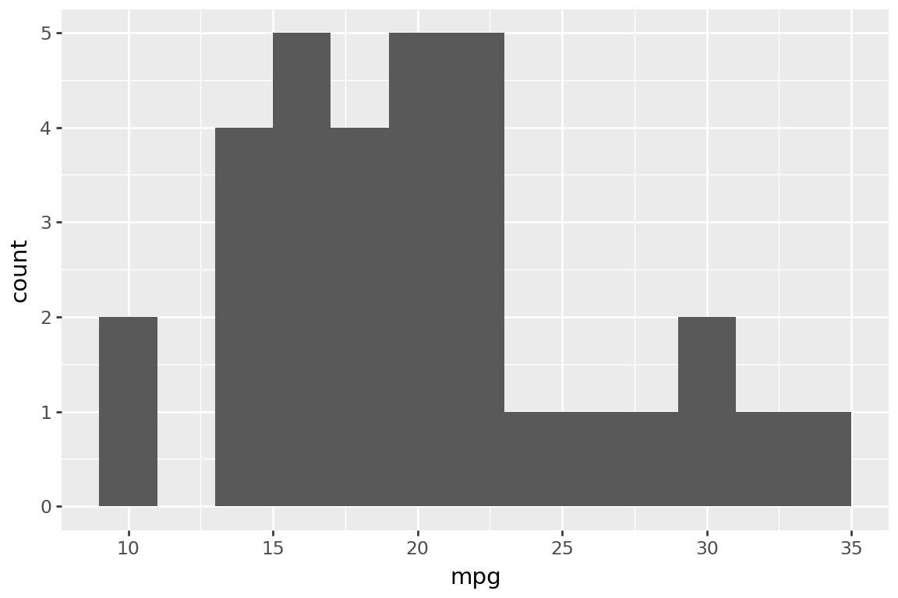
The binwidth is your choice, and an important one — too narrow is noise, too wide smooths away every feature. Always try a few values.
For comparing a distribution across groups, the boxplot is the tool: a box from the first to the third quartile with the median inside, whiskers spanning the rest of the data, and any outliers as lone points. Map the group to x and the variable to y; boxes and bars are filled shapes, so their interior colour is the fill aesthetic (colour is just the outline):
R
ggplot(cars, aes(x = am, y = mpg, fill = am)) +
geom_boxplot()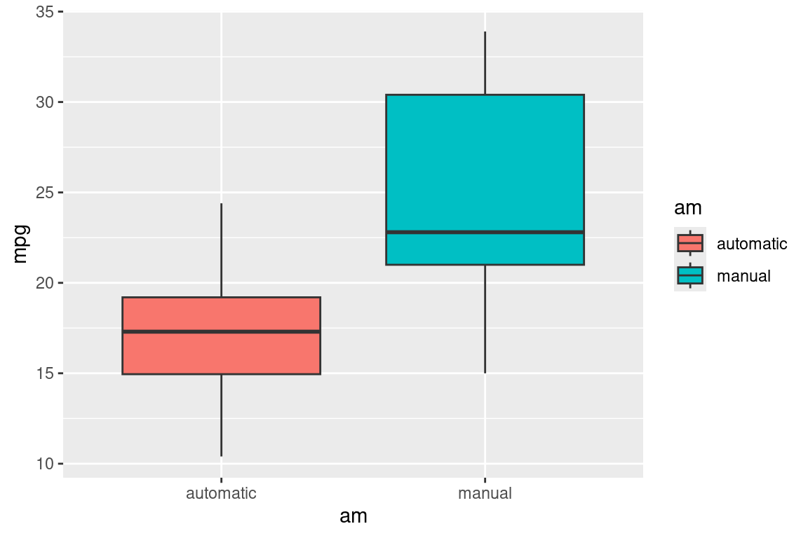
Python
(
ggplot(cars, aes(x="am", y="mpg", fill="am")) +
geom_boxplot()
).show()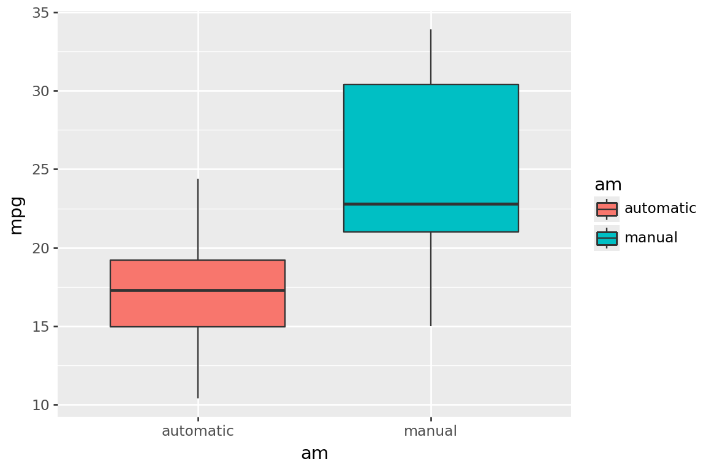
The medians echo our group_by() summary — manual cars sit visibly higher — but the boxplot also shows the overlap and spread that a table of means quietly hides.
Exercise 4.6: Petal boxplots
The built-in iris data frame records sepal and petal measurements for 150 flowers of three species. (Python users: iris ships with R, not Python — download iris.csv from Moodle into your working directory and load it with iris = pd.read_csv("iris.csv"); the R-style column names such as Petal.Length carry over, and plotnine accepts them.)
- Draw boxplots of
Petal.LengthbySpecies, with each box filled in a different colour. - Which species is clearly separated from the others? Would a single overall histogram of
Petal.Lengthhave shown you this? - Change
fillfrom a mapping to a setting: fill all boxes"orchid". Where doesfill = "orchid"have to go?
4.7.4 Line plots
geom_line() connects observations in x-order — the right geometry when x is time, iteration count, or anything sequential. Let’s watch the law of large numbers in action: simulate 10000 fair-coin flips (rbinom(10000, size = 1, prob = 0.5) in R, rng.binomial(1, 0.5, size=10000) in Python — both draw 10000 independent 0/1 values) and plot the running proportion of heads. Since randomness is involved, we set the seed so that each “random” figure is exactly reproducible — though not the same figure: R’s and numpy’s generators produce different streams, so the two columns show two different, equally fair, coin sequences:
R
set.seed(7432)
lln <- tibble(
n = 1:10000,
running_mean = cumsum(rbinom(10000, size = 1, prob = 0.5)) / n
)
ggplot(lln, aes(x = n, y = running_mean)) +
geom_line() +
geom_hline(yintercept = 0.5, linetype = "dashed")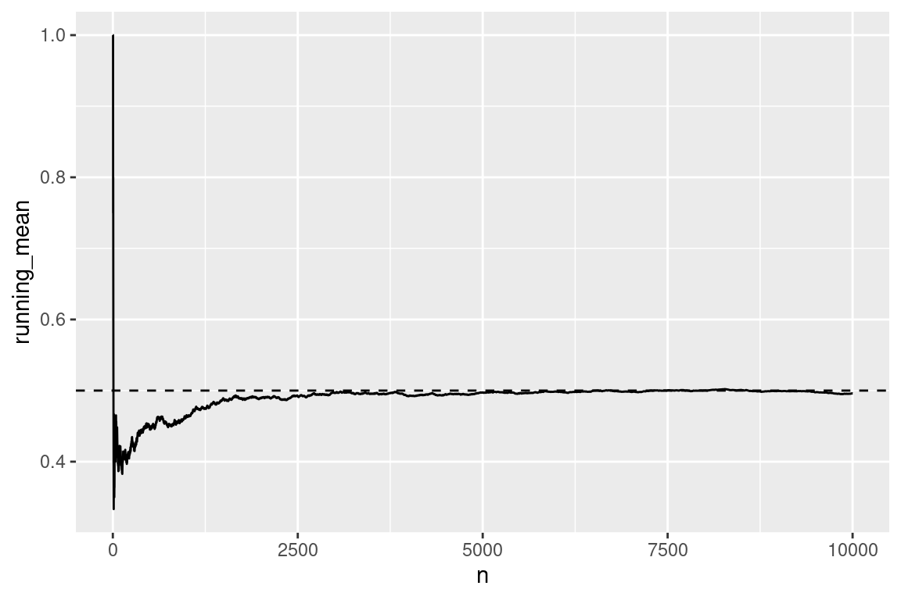
Python
rng = np.random.default_rng(7432)
n = np.arange(1, 10001)
lln = pd.DataFrame({
"n": n,
"running_mean": np.cumsum(rng.binomial(1, 0.5, size=10000)) / n
})
(
ggplot(lln, aes(x="n", y="running_mean")) +
geom_line() +
geom_hline(yintercept=0.5, linetype="dashed")
).show()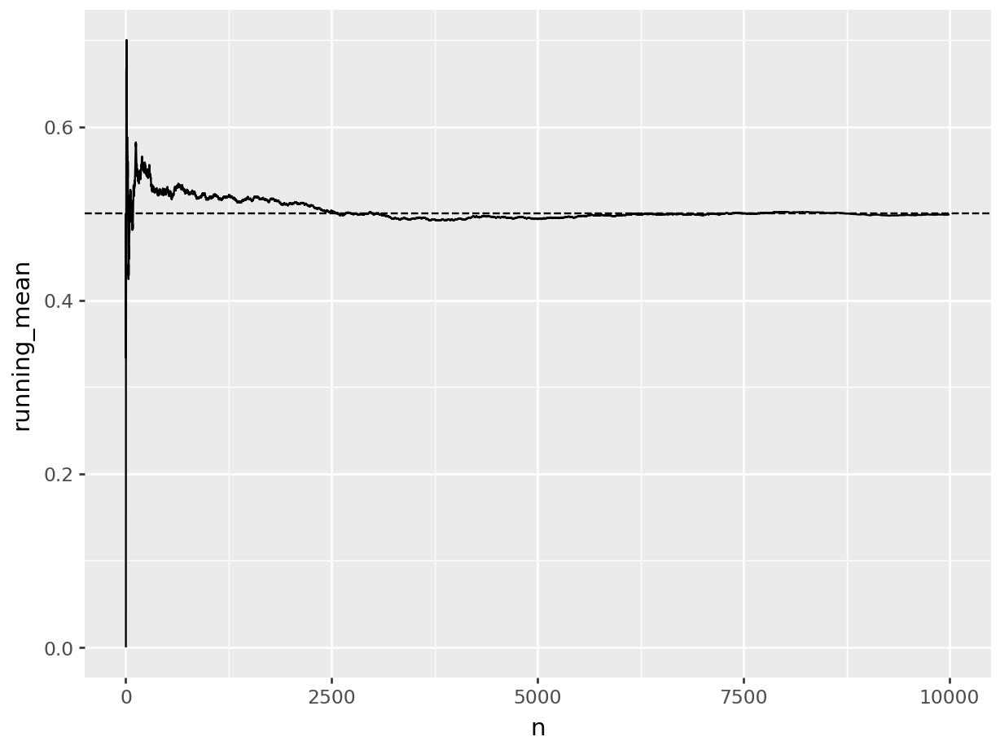
In both runs the wild early swings settle onto the dashed line at 1/2: the sample mean converging to the expectation — slowly, as the fluctuations only shrink like 1/\sqrt{n}. (geom_hline() draws a horizontal reference line; note how it stacks onto the plot as just another layer.) In Chapter 5 the very same plot template — value against iteration — will track optimisation algorithms as they converge.
Note for Python users: watch the argument names — they swap roles across the languages. R’s rbinom(10000, size = 1, prob = 0.5) asks for 10000 draws of size = 1 trial each; numpy’s rng.binomial(1, 0.5, size=10000) says the same thing, but now size counts the draws. Copying arguments across languages by name, without reading, is how “10000 flips of one coin” silently becomes “one flip of 10000 coins”.
4.7.5 Facets
Colour handles a third variable; a fourth would get crowded. Faceting splits one plot into a panel per value of a variable, with shared axes so panels compare fairly:
R
ggplot(cars, aes(x = wt, y = mpg, colour = am)) +
geom_point() +
facet_wrap(~ cyl)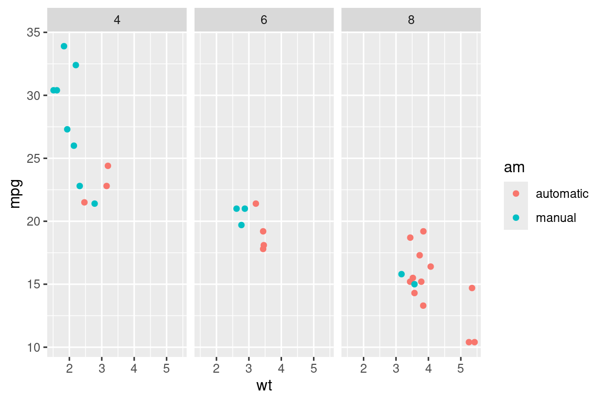
Python
(
ggplot(cars, aes(x="wt", y="mpg", colour="am")) +
geom_point() +
facet_wrap("~cyl")
).show()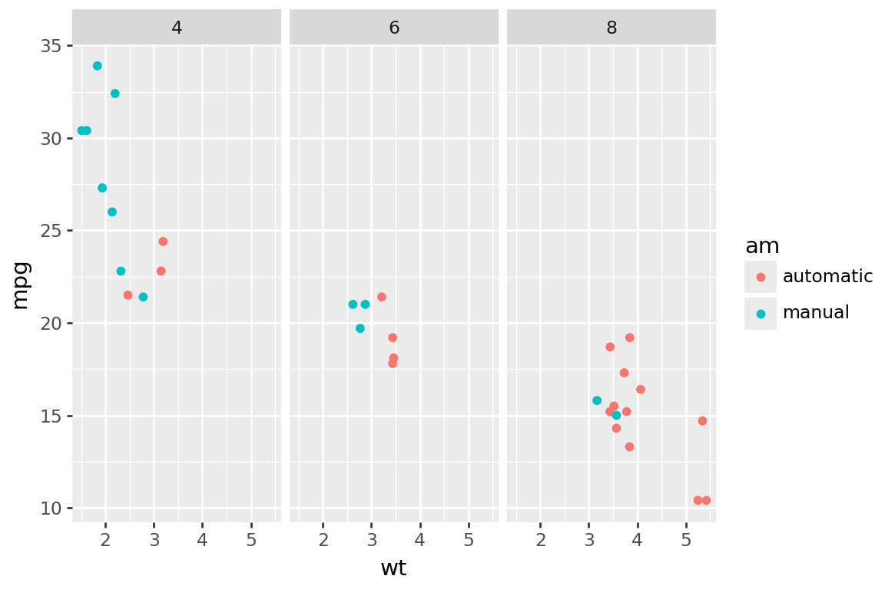
facet_wrap(~ cyl) means “one panel per value of cyl” (the ~ is R’s formula syntax — you will meet it again in regression). Arrange the panels with nrow or ncol, e.g. facet_wrap(~ cyl, ncol = 1) stacks them vertically, which is ideal for comparing distributions along a shared x-axis.
Note for Python users: plotnine takes the formula as a string — facet_wrap("~cyl"), or just facet_wrap("cyl") — with the same nrow/ncol arguments.
Exercise 4.7: Facet the histograms
Back to iris: draw histograms of Petal.Length (pick a sensible binwidth), faceted by Species, with the three panels stacked in a single column. Why does stacking them vertically (rather than side by side) make the species easier to compare? How does this figure relate to the boxplots of Exercise 4.6?
4.7.6 Labels, themes and saving
Everything so far was exploratory: quick plots for you. A figure for a report needs proper labels — nobody downstream knows what wt means — and a cleaner look. labs() names every mapped aesthetic plus the title, and theme_minimal() swaps the grey default for something publication-friendly (we will use it from now on):
R
p <- ggplot(cars, aes(x = wt, y = mpg, colour = am)) +
geom_point() +
labs(
title = "Lighter cars go further on a gallon",
x = "Weight (1000 lbs)",
y = "Miles per US gallon",
colour = "Transmission"
) +
theme_minimal()
p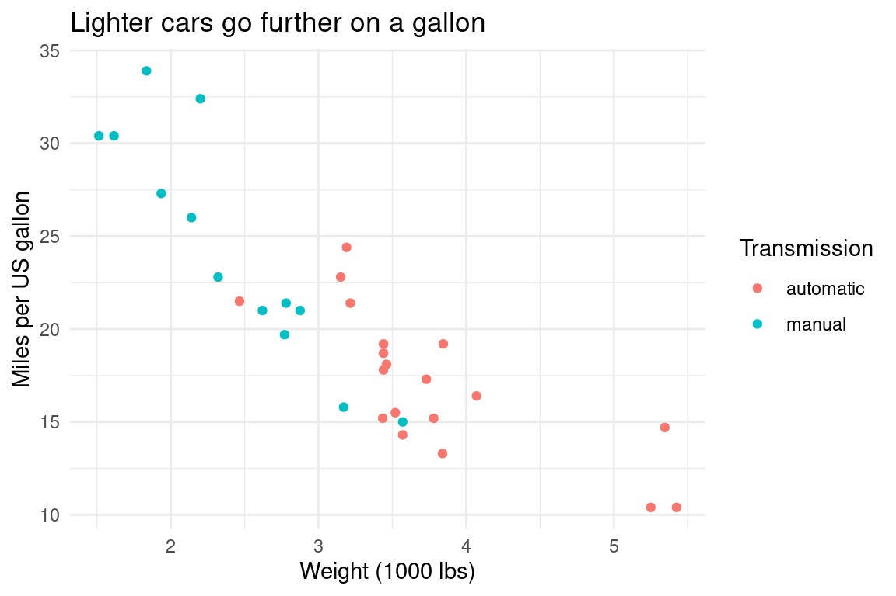
Python
p = (
ggplot(cars, aes(x="wt", y="mpg", colour="am")) +
geom_point() +
labs(
title = "Lighter cars go further on a gallon",
x = "Weight (1000 lbs)",
y = "Miles per US gallon",
colour = "Transmission"
) +
theme_minimal()
)
p.show()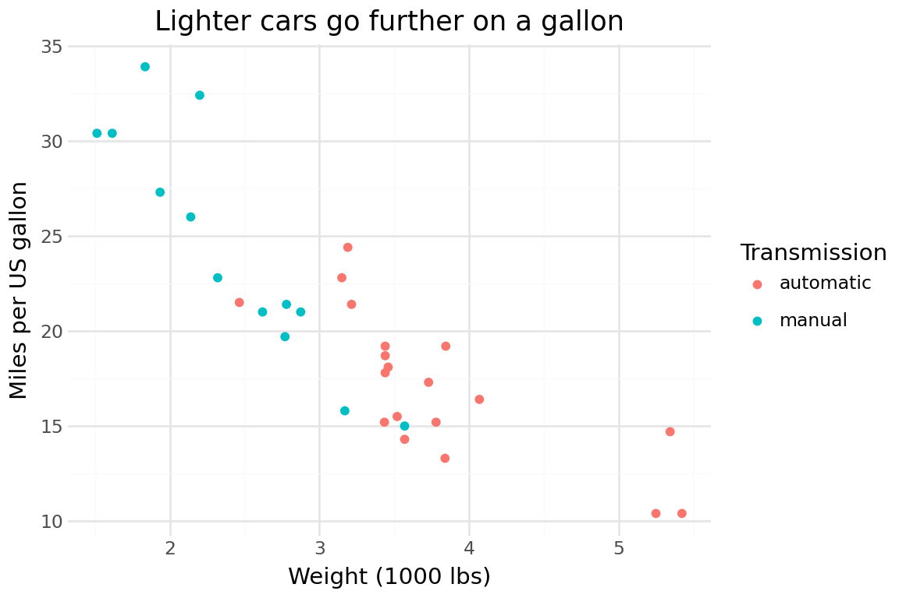
Note we stored the plot in a variable — plots are ordinary objects in both languages, so you can print them, add more layers later (p + facet_wrap(~ cyl)), or save them to a file with ggsave() (in plotnine, the plot’s .save() method):
R
ggsave("week4_mpg_wt.png", p, width = 6, height = 4) # inchesPython
p.save("week4_mpg_wt_py.png", width=6, height=4, verbose=False) # inchesChange the extension to get a different format (.pdf scales beautifully in documents). If a figure looks wrong in your report, resize it here, in code — never by dragging its corner in a word processor.
4.8 Challenges
Challenge 4.1: The full pipeline
Time to run the whole week end to end: file → table → wrangle → summarise → figure → file. First create the raw data file by running:
R
write_csv(as_tibble(mtcars, rownames = "model"), "week4_cars.csv")Python
mtcars.rename(columns={"name": "model"}).to_csv("week4_cars_py.csv", index=False)Now, starting from that CSV (pretend someone emailed it to you):
- Read
week4_cars.csv(Python:week4_cars_py.csv) withread_csv()(Python:pd.read_csv()). - In one
mutate()(Python: one.assign()): convertamto a factor (Python: categorical) labelled"automatic"/"manual",vsto one labelled"V-shaped"/"straight", and addefficiency = mpg / hp. - Produce a per-
cylsummary table: number of cars, mean and standard deviation ofmpg. - Draw a scatter plot of
hpagainstmpg, coloured by transmission, faceted bycyl, with a least-squares line per transmission (no confidence band), full labels, andtheme_minimal(). - Save the figure to
week4_analysis.png(Python:week4_analysis_py.png) withggsave()(Python:.save()).
Bonus points if (a)–(b) happen in a single pipeline.
Challenge 4.2: Waves, functionally
A plotting challenge that resurrects Chapter 3. Reproduce this figure:
R
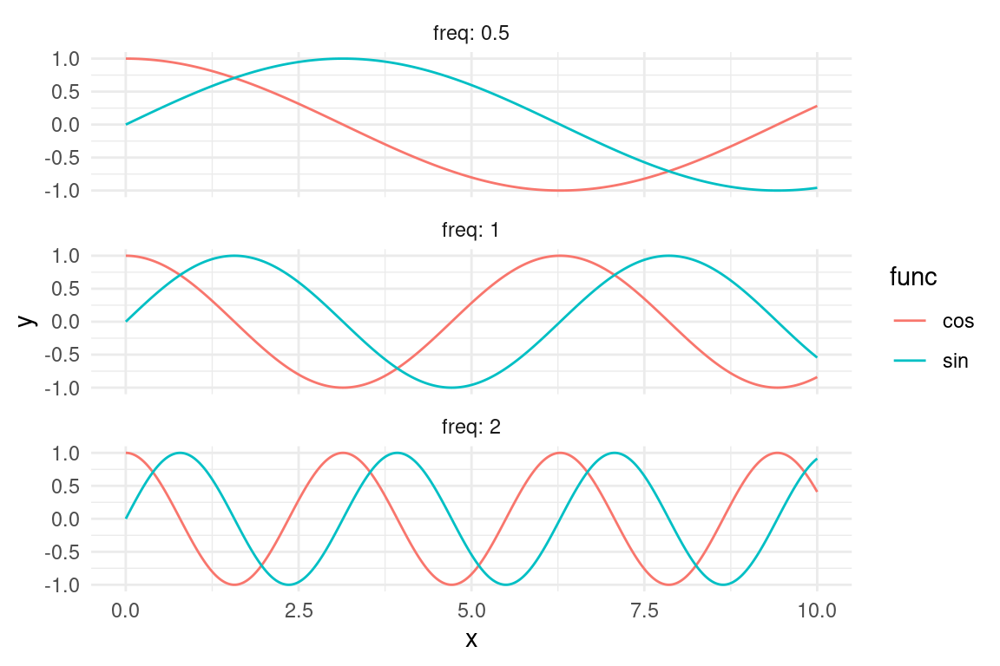
Python
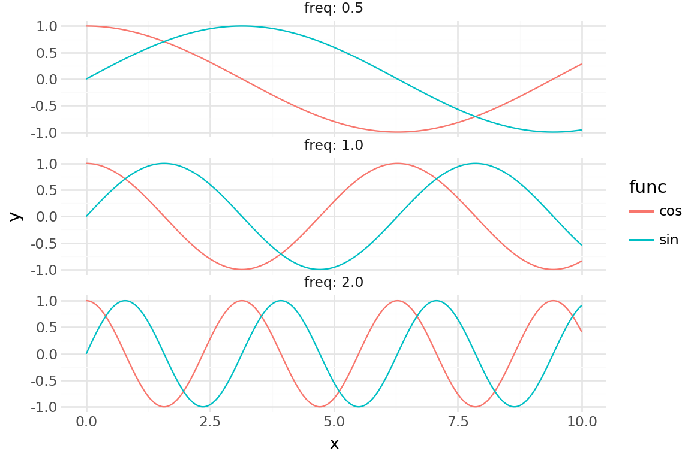
That is six curves — \sin(fx) and \cos(fx) for frequencies f \in \{0.5, 1, 2\} over x \in [0, 10] — in one data frame with columns x, y, func and freq, plotted with colour mapped to the function and one facet per frequency (labeller = label_both prints freq: 0.5 etc. in the panel strips).
The rules: no copy-pasting six blocks of data-frame code, and no for loops. Write a lambda that builds the data frame for one frequency, map() it over the three frequencies (Python: a list comprehension does the same job), and stitch the results with bind_rows() (Python: pd.concat()), both of which happily accept a list of data frames.
That completes the toolbox: data structures, control flow, functions, and now data wrangling and graphics. Next week (Chapter 5) we put everything to work on the central computational problem of statistics — optimisation.